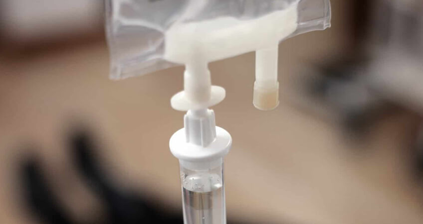

+380(97) 369 76
65
+380(97) 369 76
65Капельница от алкоголя на дому в Одессе
Снимаем алкогольную интоксикацию на дому в Одессе.
Работаем в Одессе, Киеве, Львове, Харькове, Днепре, Запорожье, Черноморске, Каменском


Бесплатная консультация, работаем круглосуточно 24/7
Снимаем алкогольную интоксикацию на дому в Одессе.
Работаем в Одессе, Киеве, Львове, Харькове, Днепре, Запорожье, Черноморске, Каменском
Капельница от алкоголя на дому - это комплексное врачебное мероприятие которое проводит врач нарколог с помощью капельницы от алкоголя при острой или хронической алкогольной интоксикации. В городе Одесса Врачи наркологи в случаи надобности выезжают на дом для проведения детоксикационной терапии и нормализации общего состояния больного. Капельница от алкоголя на дому (Одесса) - это самый эффективный , быстрый и безопасный способ снять алкогольную интоксикацию , ведь главное преимущество капельницы от алкоголя на дому по сравнению с таблетированным лечением это скорость и высокая биодоступность препаратов что позволяет обеспечить полный детокс организма за считанные часы.
Капельницу от алкогольной интоксикации в Одессе можно назвать самым популярным методом в лечении острого алкогольного отравления или длительной алкогольной зависимости. При любой помощи в лечении алкоголизма первым этапом выступает полная очистка от токсинов организма больного. В случаи когда пациент по какой либо причине не может или не хочет обращаться в стационар - Одесские врачи наркологи выезжают на дом для оказания в полной мере медикаментозной и психологической помощи зависимого человека. Помните что лечение любой стадии алкогольной зависимости в случаи отказа от госпитализации начинается с капельницы от алкоголя прямо у вас на дому.
Прокапаться от алкоголя на дому - это старый Одесский метод в лечении алкогольного похмелья любой сложности , так же с помощью капельницы от алкоголя на дому можно вывести из запоя даже самого тяжелого и пропитого алкоголика. Прокапать от алкоголя можно только в случаях если запой длиться менее трех недель а так же общее состояние здоровья пациента позволяет ему проводить инфузионную, медикаментозную терапию дома. В случаи нужды врач нарколог медицинской службы UmbrellaPlus “Безопасная наркология” приезжает на вызов для поставки капельницы от алкоголя в течении одного часа.
В случаях когда пациент находится в состоянии длительного алкогольного запоя , врачи наркологи для капельницы от алкоголя использую комбинированный детоксикационный состав инфузии в который обязательно входит - детоксикационные растворы, аминокислоты , антиоксиданты , гепатопротекторы , кардиопротекторы , витамины группы В и С , седативные препараты а так же препараты для нормализации тревожного состояния и сна. Помните что капельница от алкоголя всегда должна иметь индивидуальный состав под каждого пациента и подбираться врачом наркологом исходя из жизненных показателей больного , включая его анамнез жизни , наличие хронических заболеваний а так же длительности нахождения в алкогольной интоксикации или запои.
Состав капельницы от алкоголя всегда подбирается индивидуально. Но часто врачи наркологи Одессы используют такой список медикаментов:
В случаях когда есть острая необходимость в помощи врача нарколога на дому в Одессе - доктора медицинской службы UmbrellaPlus “безопасная наркология” могу отказать качественную квалифицированную медицинскую помощь прям у вас дома . Доктор приезжает на обычной машине с сумками без маркировки для сохранения полной анонимности пациента. После оценки состояния больного доктор ставит капельницу от алкоголя на дому , оставляет таблетки и дает дальнейшие рекомендации о лечении и возможном кодировании от алкоголя.
Стоимость капельницы от алкоголя на дому в Одессе начинается от 1699 грн и может меняться в зависимости от длительности и тяжести интоксикации больного.
| Услуга | Цена |
|---|---|
| Лечение алкоголизма Одесса | От 1499 грн |
| Вывод из запоя Одесса | От 1499 грн |
| Вывод из запоя на дому Одесса | От 1699 грн |
| Капельница от алкоголя Одесса | От 1499 грн |
| Капельница от алкоголя на дому Одесса | От 1699 грн |
| Лечение пивного алкоголизма Одесса | От 1499 грн |
| Лечение женского алкоголизма Одесса | От 1499 грн |
| Кодирование от алкоголизма Одесса | От 3999 грн |
| Кодирование уколом Одесса | От 3999 грн |
| Кодирование от алкоголизма уколом Дисульфирам | От 3999 грн |
| Кодирование от алкоголизма уколом Эспераль | От 5500 грн |
| Подшивка от алкоголя Одесса | От 9999 грн |
| Кодирование по методу Довженко Одесса | От 14999 грн |
Лечение алкоголизма на дому в Одессе проводиться самыми квалифицированными врачами наркологами которые имеют опыт работы в реанимационных отделениях или подстанциях неотложной скорой помощи. Лечение зависимых всегда подбирается индивидуально исходя из психологического и физического состояния больного а так же его настроя и мотивации к выздоровлению. Первым основным моментом в лечении алкоголизма является прекращение употребления алкоголя зависимым человеком. Для купирования запойного состояния в капельницу от алкоголя на дому входят препараты имеющие свойства снимать патологическое влечение к спиртным напиткам и останавливать бесконечную попойку. Лечение алкоголизма на дому длительная работа , которая требует высокой квалификации врача а так же хорошей мотивации пациента , задача врача нарколога с помощью медикаментов и психотерапии создать условия при которых у зависимого человека будет возникать отвращение к любым спиртным напиткам на психическом и физическом уровне.
Что бы прокапать от алкоголя на дому в Одессе вам нужно позвонить в частную наркологическую службу UmbrellaPlus “Безопасная наркология” по номеру 050-021-69-57 , дежурный врач нарколог проконсультирует вас и в случаи надобности отправит доктора к вам домой. В течении часа врач будет уже у вас , проведет первичную оценку состояния зависимого , установит стадию и форму алкоголизма после чего поставит капельницу от алкоголя на дому. Прокапать от алкоголя на дому - это анонимный и самый безопасный метод в лечении алкогольной интоксикации. Все препараты для прокапывания от интоксикации обладают сильным детоксикационным и антиоксидантным составов, который в течении короткого времени поможет поставить на ноги даже самого тяжелого пациента с алкогольным отравлением.
Выведение из запоя на дому проходит через три обязательных этапа для достижения длительной ремиссии в лечении алкоголизма.
Капельница после алкоголя на дому назначается пациентам которые перебрали с выпивкой накануне или же если алкогольный напиток не был высокого качества. Отравление спиртными напитками или их суррогатами очень частое явление которое сопровождается сильнейшей интоксикацией , тошнотой и рвотой , головокружением , тахикардией а иногда и сопором и возможной комой. Капельница после алкоголя обеспечит детоксикацию в случаи если пациент отравился спиртным а так же нейтрализует токсины которые остались в организме пациента. Отравление суррогатами как правило происходит в момент когда пациент теряет контроль над выпивкой и пьет что попало под руку. Обычно такие пациента уже имеют минимум вторую стадию алкоголизма и нуждаются в длительном медикаментозном лечении.
Что бы вызвать врача нарколога на дом в Одессе вам нужно позвонить по номеру 050-021-69-57 в медицинский центр UmbrellaPlus “Безопасная наркология”.
Когда нужен врач нарколог?
Врач нарколог - это доктор специализирующиеся на лечении алкогольной и наркотической зависимости, задача врача нарколога провести оценку тяжести состояния пациента , поставить стадию и форму зависимости , провести детоксикационную терапию с целью очищения организма пациента от токсинов и шлаков которые в следствии употребления алкоголя или наркотиков скопились в организме. После детоксикации больного доктор может предложить радикальный метод лечения зависимости с помощью кодирования от алкоголя с целью сформировать стойкое отвращение к спиртным напиткам на психологическом уровне больного. Работа врача нарколога требует высокой квалификации и большого опыта работы с зависимыми больными. Медицинская служба UmbrellaPlus “Безопасная наркология” гарантирует вам качественное и безопасное лечение любой зависимости.
Вывод из запоя на дому - это комбинированный курс лечения алкоголизма с помощью капельницы от алкоголя. Если мы сравним таблетированное и народное лечение с капельницей от запоя то мы можем увидеть высокую эффективность инфузии , быстроту действия медикаментов а так же плавный выход из запоя любой сложности. Выведение из запоя на дому это первый шаг к выздоровлению зависимого человека , помните алкоголизм всегда прогрессирует а запой может быть потенциально опасен для здоровья зависимого , что бы вызвать врача нарколога и вывести из запоя на дому в Одессе - позвоните по номеру 050-021-69-57.
Медицинская служба UmbrellaPlus “Безопасная наркология” выезжает на дом в случаи острой алкогольной интоксикации круглосуточно и гарантирует высокий уровень детоксикационной терапии при любой сложности интоксикации. Врач нарколог который приезжает на вызов всегда при себе имеет весь набор медикаментов на все возможные случаи включая реанимационный комплекс а так же противошоковую аптечку. Что бы вывести из запоя на дому в Одессе вам нужно позвонить по номеру 050-021-69-57 и получить срочную бесплатную консультацию дежурного врача нарколога.
Выйти из запоя на дому можно с помощью таблетированного, народного или врачебного наркологического лечения. Самый безопасный способ выйти из запоя на дому это вызвать врача нарколога для постановки капельницы от алкоголя на дому. Такой метод лечения интоксикации при запои будет самым безопасным и эффективным , помните что большинство обострений хронических заболеваний могут скрываться под маской алкогольной интоксикации и протекать в бессимптомной форме. Доктор который приезжает на вызов в Одессе всегда оценивает все возможные варианты осложнений , собирает анамнез и историю болезни а так же снимает ЭКГ , проверяет пульс , давление и сатурацию. Помните что выход из запоя на дому самостоятельно с помощью народного лечения может быть опасен для здоровья вашего родственника , не занимайтесь самолечением оно может вам дорого стоить!
Основным противопоказанием к выводу из запоя на дому является наличие острых или хронических заболеваний в стадии нестойкой ремиссии:
Мы не рекомендуем заниматься самолечением и в случаи когда вам нужно вывести зависимого человека из запоя настоятельно советуем обратиться за любой квалифицированной медицинской помощи. Но если такой возможности нет то вы можете попробовать народные и таблетированные методы лечения:
Помните самым эффективным и безопасным выводом из запоя на дому в Одессе является вызов врача нарколога по номеру 050-021-69-57.
Анонимно

"Ну в хлопців просто золоті руки й світла голова, мене капали Олексій та Владислав, буквально за декілька сеансів я наче заново народився, до цього пив більше 3х тижнів, не міг зупинитись, дуже радий що знайшов саме цих спеціалістів, всім рекомендую"
Анонимно
"В течение нескольких лет я злоупотреблял алкоголь, что привело к увольнению с работы и вызвало у меня мысли о суициде. Понимая, что такой образ жизни неприемлем, я обратился за помощью в клинику "Амбрела". Здесь я смог преодолеть свою зависимость от спиртного благодаря заботливым и опытным врачам, а также эффективной системе лечения. Спустя более года я полностью избавился от желания употреблять алкоголь, и теперь моя жизнь вернулась в норму. Я даже не приближаюсь к спиртному! Благодарю врачей клиники "Амбрела" за их помощь и заботу."
Анонимно
"Я обращался за помощью в различные клиники, пытаясь избавиться от своей зависимости от алкоголя, но без особых успехов. Никак не мог справиться с желанием прибегнуть к бутылке, пока друг не посоветовал мне обратиться в центр "Амбрелла". Я записался на прием и был поражен заботливым отношением к пациентам. Уже прошло два года, и теперь я смотрю на алкоголь с абсолютной равнодушием, активно занимаюсь спортом и улучшил отношения в семье. Благодаря центру "Амбрелла" моя жизнь была спасена от алкогольной зависимости!"
Анонимно

"Хочу выразить свою благодарность врачам из центра алкоголизма "Амбрела" за то, что они буквально спасли мою жизнь. В течение последнего года я сильно увлекался питьем, и все это привело к катастрофическим последствиям. Хотя я ходил на терапевтические сеансы, но безрезультатно. Тогда я нашел адрес клиники "Амбрела" в интернете, изучил отзывы и информацию о центре, и записался на прием. Там мне сразу предложили методику лечения, которая помогла не только справиться с физической ломкой, но и психической зависимостью от алкоголя. Не буду распространяться, скажу только одно - после пребывания в этой клинике я стал другим человеком, и навсегда забыл, что такое привкус алкоголя. Больше меня не тянет на это! Я искренне верю, что в центре "Амбрела" трудятся настоящие целители душ!"
Анонимно
"После сложного развода мой сын начал подавлять свою обиду и горе употреблением алкоголя. Он старался скрывать это от меня, но я, как мать, почувствовала, что что-то не так. В конечном итоге, ситуация стала критической. Моя знакомая посоветовала мне обратиться в клинику "Амбрела". Я была приятно удивлена их работой! Они помогли сыну преодолеть очередной период злоупотребления алкоголем, и с тех пор прошел уже более года, и он совсем не пьет."
Анонимно
"Благодаря вашей помощи, моя семья была спасена. Я с трудом уговорила мужа начать лечение, и последний каплей был пьяное ДТП. К счастью, в аварии никто не пострадал, но это был для него сигнал к действию. Он наконец согласился пройти курс лечения на дому, в стационар не хотел ложиться. Лечение было трудным, и были моменты, когда срыв был настолько близок, но благодаря вашему центру Амбрелла мы справились с этим."
Анонимно
"Для меня эта клиника стала настоящим спасением! Долгое время я упорно отказывался от лечения, уверен был, что со мной все в порядке. Но к счастью, семья уговорила меня попробовать. И сегодня я чувствую себя невероятно счастливым, осознавая, что мне абсолютно не нужен алкоголь. Огромное спасибо за помощь и поддержку, которые я получил здесь! Я благодарен вам за новую возможность жить полноценной и счастливой жизнью!"
Анонимно
"Выражаю благодарность ребятам, которые оказали мне помощь и не отвернулись. Уже 10 месяцев я остаюсь чистой. Благодарю за то, что помогли найти новый путь в моей жизни."
Приезд в течении 60 минут от момента поступления заявки
Наши филиалы есть во всех больших городах Украины.
Мы оказываем профессиональную доказательную медицинскую помощь. Гарантией является наше имя.
Номер телефона:
+380 (97) 369 76 65
+380 (50) 021 69 57
Адрес главного офиса: г. Харьков ул. Сумская 47
Офис вашего города нужно уточнить
Работаем в: Одессе, Киеве, Львове, Харькове, Днепре,
Запорожье
Telegram: t.me/umbrellaplus
График работы: Круглосуточно